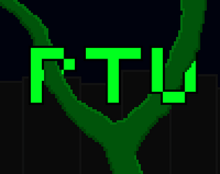
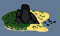

Time for Revenge
Интересная игра о человеке, который мстит своему обидчику.

Path to Utopia
Ты просыпаешься в пост-апокалипсисе, что будешь делать?
Учёные создали машину времени. Ночью она случайно активируется и повергает мир в хаос.
Несмотря на взрыв, машина продолжает работать.

Lost in Ocean
Реалистичное выживание на острове.
Алчный бизнесмен и богач, Лео Крумо, попадает на необитаемый остров после шторма.
Ему предстоит выживать на неизведанной земле, кишащей крокодилами и змеями.
SPU Foundation
Фонд исследованияаномалий
Вам предстоит руководить фондом SPU и участвовать в боевых миссиях.
Объекты ANO разделяются на классы по сложности. Узнайте всё о работе фонда SPU!

Time for Revenge: Alex's birthday
С днём рождения!
У Time for Revenge день рождения, давайте отметим его!
В этой модификации вы можете посетить фестиваль в офисе и стрелять тортиками.

Last life
Долгий путь ради чего-то?
После атомной войны маленькая утопия роботов, превращается в руины.
Игроку предстоит добывать сенсоры для себя и адаптироваться к новым обстоятельствам.
Пройти игру лишь терпеливый сможет...

Time for Revenge Classic
Ремейк Time for Revenge.